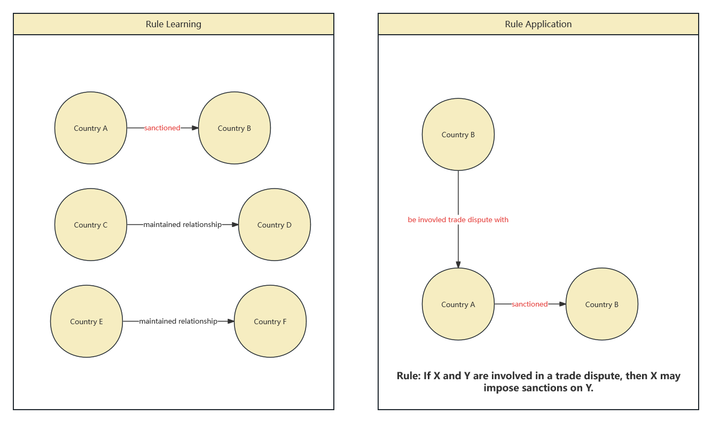

Heuristic Temporal Walk

Edge rarity refers to the frequency of occurrence of a certain type of edge (i.e., a specific type of relationship between two entities) within a knowledge graph. If a particular type of relationship is uncommon in the graph, then that type of edge is considered rare. My algorithm favors the selection of rare edges for the next step in reasoning. This is because rare relationships may contain more valuable or insightful information. For instance, if most countries maintain normal relations with other countries, but only a few countries impose sanctions on others, then the "sanction" relationship is rare and thus might be deemed more worthy of exploration.
Method Comparison
Learning and Application Performance
| Metric |
Temporal Logic Walk |
Heuristic Walk |
| Learning Time (s) |
283.65 |
154.48 |
| Number of Relations with Rules |
427 |
433 |
| Total Number of Rules |
26,881 |
32,520 |
| Application Time (s) |
2932.91 |
920.98 |
| Queries with No Candidates |
880 |
911 |
Rules by Length Distribution
| Rule Length |
Temporal Logic Walk |
Heuristic Walk |
| 1 |
7847 |
13138 |
| 2 |
7328 |
8208 |
| 3 |
11706 |
11174 |
Performance Metrics
| Metric |
Temporal Logic Walk |
Heuristic Walk |
| Hits@1 |
0.335577 |
0.314249 |
| Hits@3 |
0.482718 |
0.47039 |
| Hits@10 |
0.612275 |
0.595939 |
| MRR |
0.430424 |
0.412585 |
Heuristic Walk Methodology
The Heuristic Walk introduces a novel approach by prioritizing edges based on their rarity, aiming to uncover more significant patterns within the graph. This strategy not only accelerates the learning process but also enables the discovery of nuanced rules, thereby enhancing the overall effectiveness of knowledge graph reasoning.